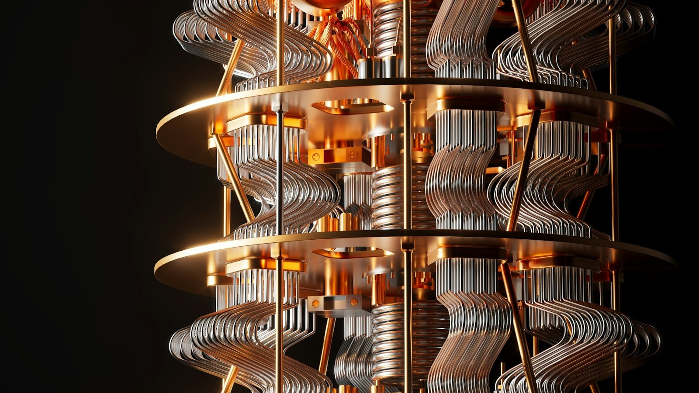
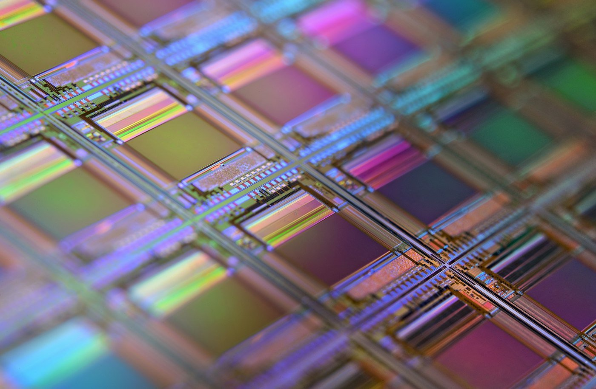
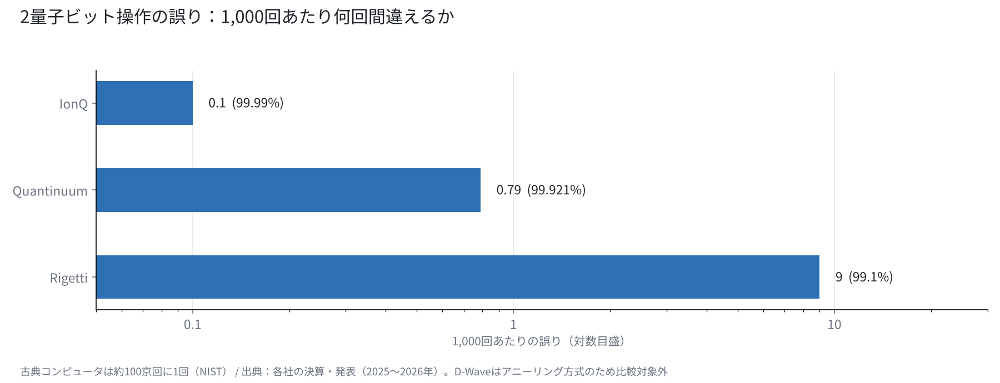
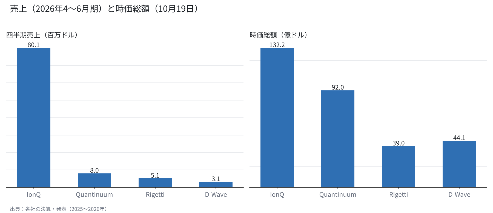

量子コンピュータの4社を、方式と数字で比べる
IonQ・Quantinuum・Rigetti・D-Wave。同じ「量子」でも、作り方も稼ぎ方も違う。
誤りの少なさ、売上、手元の資金を並べると、4社の現在地が見えてくる。
僕は量子株を持ち、IonQは売って指値で待っている。その判断の材料を、ここに置いておく。

量子コンピュータは、何がむずかしいのか
古典のコンピュータは、0か1のビットで計算する。量子コンピュータは、0と1を重ね合わせた量子ビットを使い、特定の問題を桁違いの速さで解けると期待されている。
量子ビットは、ほかの量子ビットと「もつれ」の関係を作れる。この性質が、分子の計算や暗号の解読、物流の最適化などで期待される理由になる。
むずかしいのは、量子ビットがとても壊れやすいことだ。熱や振動、わずかな電磁波でも状態が崩れる。米国立標準技術研究所（NIST）は、今の量子ビットはおよそ1,000回の操作に1回の割合で誤ると説明している。古典のコンピュータは、約100京回に1回しか誤らない。
この差を埋めるのが「誤り訂正」になる。たくさんの物理的な量子ビットを束ね、1つの「論理量子ビット」として扱う。Googleは2024年、表面符号という方式で、束ねる数を増やすほど誤りが減ることを示した（arXiv:2408.13687）。
つまり競争の中心は、量子ビットの数より、誤りの少なさと束ね方にある。4社を比べるときも、まずこの物差しを使う。
4つの方式：イオン、超伝導、アニーリング
IonQとQuantinuumは「イオントラップ」方式をとる。真空の中に原子のイオンを電場で浮かせ、レーザーで操作する。どちらもバリウムのイオンを使い、量子ビットどうしの結びつきが自由で、誤りが少ないのが強みだ。弱みは、操作の速さと、装置を大きくすることにある。
Rigettiは「超伝導」方式だ。極低温に冷やした回路を量子ビットにする。半導体の製造技術を使えるので速く作れるが、誤りは多めになる。小さなチップをつなぐ「チップレット」で規模を広げている。
D-Waveは「アニーリング」方式を長く手がけてきた。最適化の問題に向いた専用の仕組みで、4,500量子ビット超のAdvantage2を持つ。2026年にゲート型の会社を約5.5億ドルで買い、汎用の方式にも足を広げた。

誤りの少なさを並べる
2量子ビット操作の正確さ（忠実度）を、各社の発表で並べた。IonQは試作機で99.99%超（2025年10月）、QuantinuumのHeliosは99.921%、RigettiのCepheus-1-108Qは中央値で99.1%になる。
1,000回あたりの誤りに直すと、IonQは約0.1回、Quantinuumは約0.8回、Rigettiは約9回だ。イオントラップの2社が、超伝導より1桁ほど少ない。
Quantinuumは98量子ビットのHeliosで、論理量子ビット48個を動かしたと発表している。論理量子ビットの忠実度は99.9995%に達した。誤り訂正の実演では、今のところ先頭にいると僕は見ている。
D-Waveのアニーリングは、ゲート型と同じ物差しでは比べられないため、図から外した。

稼ぎ方と、手元の資金
2026年4〜6月期の売上は、IonQが8,010万ドル（前年比+287%）で、ほかの3社を大きく引き離す。Quantinuumは800万ドル、Rigettiは510万ドル、D-Waveは310万ドルだった。
IonQは純損失が18.68億ドルと大きいが、現金を約30億ドル持つ。10月14日には1株40ドルで20億ドルの増資を決め、7年のワラント1億株（行使価格69.46ドル）もつけた。
Rigettiは現金5.41億ドルで借り入れがなく、米商務省から最大1億ドルの支援の意向書を得ている。Quantinuumは2026年6月に1株60ドルで上場し、Honeywellが議決権の約49.1%を持つ。
時価総額（10月19日）は、IonQが132.2億ドル、Quantinuumが92億ドル、D-Waveが44.1億ドル、Rigettiが39億ドルだった。売上の差ほど、時価総額の差は開いていない。市場は今の売上より、方式と将来の道筋に値段をつけている。

4社を1枚の表で見る
ここまでの数字を、1枚にまとめておく。
| 会社 | 方式 | 主な機種 | 2量子ビット忠実度 | 4〜6月期売上 | 時価総額（10/19） | DARPA QBI |
|---|---|---|---|---|---|---|
| IonQ | イオントラップ | Tempo／Superion 256（2027年） | 99.99%超（試作） | 8,010万ドル | 132.2億ドル | ステージC |
| Quantinuum | イオントラップ | Helios（98量子ビット） | 99.921% | 800万ドル | 92億ドル | ステージB |
| Rigetti | 超伝導 | Cepheus-1-108Q | 99.1%（中央値） | 510万ドル | 39億ドル | ― |
| D-Wave | アニーリング＋ゲート型 | Advantage2（4,500量子ビット超） | ― | 310万ドル | 44.1億ドル | ― |
表で見ると、誤りの少なさはイオントラップの2社、売上はIonQ、借り入れのなさはRigetti、すぐ使える規模はD-Waveが強い。1社がすべてで勝っているわけではない。
国の評価：DARPAの最終段階
米国防高等研究計画局（DARPA）は、実用になる量子コンピュータを見極める計画（QBI）を進めている。10月8日、IonQを含む4社が最終のステージCに進んだ。最大3億ドルの支援が見込まれる。
QuantinuumはステージBにとどまった。技術の数字で先頭にいる会社が、国の選考では先に進めなかった。誤りの少なさだけでは決まらず、規模を広げる道筋まで見られているのかもしれない。
商業化の道筋
IonQは2027年に1万物理量子ビット、2030年に200万物理量子ビット・論理4〜8万を掲げる。256量子ビットのSuperionは2027年に納入する予定だ。加えて、Elisityを最大13億ドルの株式で買い、量子後の暗号を含むセキュリティにも広げている。
Quantinuumは2027年にSol、2029年にApolloと、世代ごとの計画を出している。Rigettiはチップレットで数を増やし、D-Waveはアニーリングで最適化の顧客を持ちながら、ゲート型の開発を急ぐ。
4社とも、売上の多くはまだ研究機関や政府との契約にある。誰でも使う道具になるまでには、時間がかかる。
僕はこう見ている
僕は量子株として、RigettiとD-Waveを1,000株ずつ持っている。IonQは10月13日に2,500株をすべて売り、半分の1,250株を28.5ドルの指値で待っている。
IonQを選んだ理由は、イオントラップという方式と、DARPAとの関係にあった。どちらも今日の比較で、数字として確かめられた。誤りの少なさは1桁違い、DARPAでは最終段階に残っている。
一方で、今回の増資は既存の株主には不利だと見ている。だから前提は変えずに、値段を待つ。方式で先頭にいる会社と、株価で先頭にいる会社は、同じとは限らない。
量子の会社を見るとき、僕は3つの順番で数字を確かめる。1つ目は誤りの少なさ、2つ目は手元の資金で何年研究を続けられるか、3つ目は国や大企業との契約が続いているかだ。株価は、その後に見る。
量子はまだ、研究から商業化に移る途中にある。僕は数字が前提を裏切らない限り、方式の異なる会社を少しずつ分けて持ち続ける。
出典
- NIST「Quantum Computing Explained」https://www.nist.gov/quantum-information-science/quantum-computing-explained
- Google Quantum AI, arXiv:2408.13687 https://arxiv.org/abs/2408.13687v1
- IonQ 2026年第2四半期決算 https://www.ionq.com/news/ionq-announces-record-second-quarter-2026-revenues-growing-287-yoy
- IonQ 20億ドルの増資 https://investors.ionq.com/news/news-details/2026/IonQ-Announces-Pricing-of-2-0-Billion-Equity-Offering/default.aspx
- IonQ ロードマップ https://www.ionq.com/blog/ionqs-accelerated-roadmap-turning-quantum-ambition-into-reality
- Quantinuum Helios https://quantinuum.com/blog/introducing-helios-the-most-accurate-quantum-computer-in-the-world
- Quantinuum 2026年第2四半期決算 https://www.quantinuum.com/press-releases/quantinuum-reports-second-quarter-2026-results
- Rigetti 2026年第2四半期決算 https://investors.rigetti.com/news-releases/news-release-details/rigetti-computing-reports-second-quarter-2026-financial-results
- D-Wave 2026年第2四半期決算 https://www.dwavequantum.com/company/newsroom/press-release/d-wave-reports-second-quarter-2026-results/
- DARPA QBI ステージC https://www.govconwire.com/articles/darpa-quantum-benchmarking-initiative-stage-c
写真：Planet Volumes／Laura Ockel（Unsplash）。図はYUKI CAPITALが作成
日々の数字と判断は、Xで記録している。